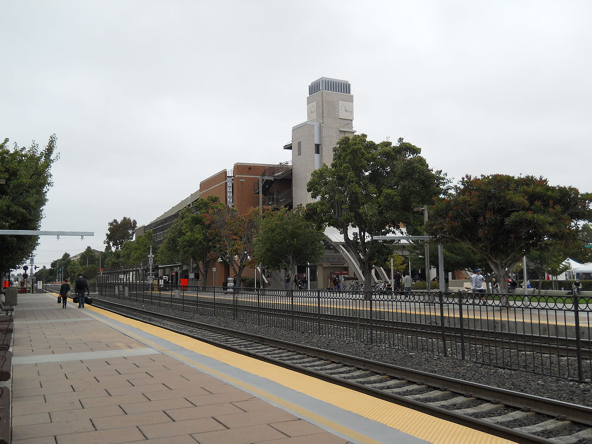
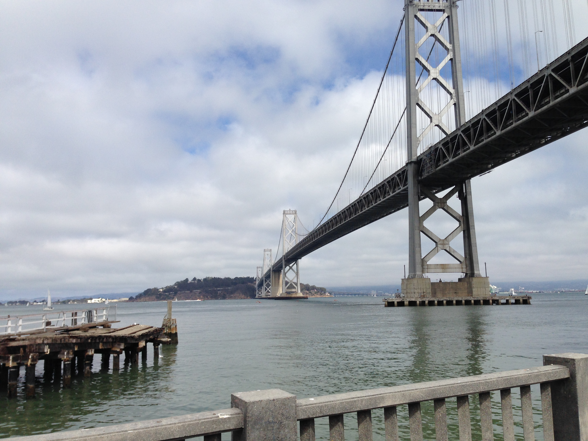
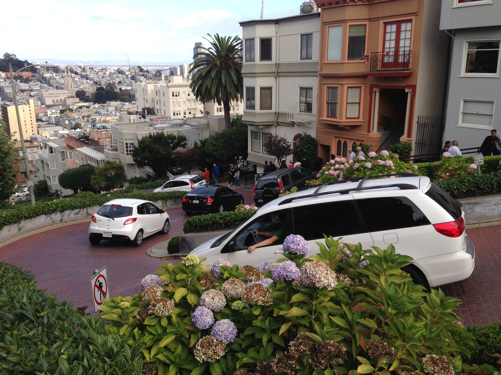

Keep in mind, I've only been in California for less than 40 hours, but what better time to go up to the City?
I got up early, still benefitting from the reverse jet-lag, and had myself a donut while waiting for my compatriots.
Now, this wasn't just any donut, it was a glazed cake donut, one of the ones with the edges that start to fan out from the center. It was delicious and moist, and tasted of all the promise of manifest destiny. It was the perfect way to start off my first Saturday away from home.
Eventually, once everyone was up, we decided to go up to the City for the day. Plans were made, Ubers were called, and train tickets purchased. And just like that, we were riding Caltrain up to the San Francisco.
 The Sunnyvale Caltrain Station, Creative Commons 3.0 by Yngvadottir
{kind=link}
The ride was scenic, but long, almost unbearably long. We spent 80 minutes on the train and made more than 15 stops, it was enough time to catch up on some podcasts, but I could see how the novelty might wear off for frequent travellers.
But then, we were in the City, and you could tell that it was a City. The train deposited us close to AT&T Park, home of the San Francisco Giants, and just down the street from the Embarcadero, perfect pedestrian fodder.
Sallying forth, we walked into the Embarcadero (Spanish for "wharf", lit. "the place for emabarking") and along the bay. The view was magnificent, the sky clear, and the water majestic. Almost immediately, we could see the San Francisco-Oakland Bay Bridge, and it was magnificent. The bridge-span struck fearlessly into the Bay, towering high above our heads, on a scale I could hardly conceive even though I call Pittsburgh, City of Bridges, my home.

This picture does not even begin to do it justice.
During our walk we saw some wonderful sculptures, the buildings owned by people I recognize (Wharton School of University of Pennsylvania) and admire (Mozilla), all framed by the wide walkway along the bay. We walked onto some of the piers, visited a bunch of little shops, and feasted our senses on all of the sights, smells, and senses.

The Gateway to the West
By this time we were not just hungry, but ravenous, so we kept walking and laughing like four happy exploring 20-somethings, but on the inside our eyes were vigilant for food like starving wolves. We made it to Pier 39, a fairly commercial, touristy attraction near the Aquarium of the Bay and Exploratorium, and instantly started scoping out our dining options, before settling on a decent Mexi-Cali restaurant, with outdoor seating overlooking the Bay. I didn't take any pictures, but there were sailboats, a view of Oakland, and even some Sea Lions, flopping around on the pier.
Finally satiated, we continued walking along the increasingly commercial wharf, passing Madame Toussand's, Ripley's Believe It Or Not, and the fanciest McDonald's I have ever seen. There were plenty of diamonds in the rough, but quite a lot of rough to sift through, so we turned away from the Bay and made our way inland. We stopped by Ghiradelli Square for some free chocolate, and then started walking up San Francisco's (in)famous hills.
From the top, we got wonderful views all the way around the city, and were insulated from the tourist traps along the waterfront. Along the way, we were greeted by Lombard Street, built on a hill so steep that the road was curved into a series of eight hairpin turns to make it easier to drive.

After Lombard, I finally felt like we were in the city. We'd made it to the Russian Hill neighborhood, and were greeted by undulating hills, row houses, and tiny little shops on the corners. I don't have any pictures from there, it was just so peaceful that I didn't think to pull out my phone.
We kept walking in a straight line, through the Tenderloin, past the City Hall, and into Market Street. We stopped in the Apple Store, but were rebuffed by the mass of humanity, so continued on, passing outlets, and boutiques left and right. We continued our journey until we were too tired to walk, and finally made for the Moscone Center and one last bite to eat before catching the Caltrain back to Cupertino, exhausted, but exhilarated by a successful expedition to the big City.